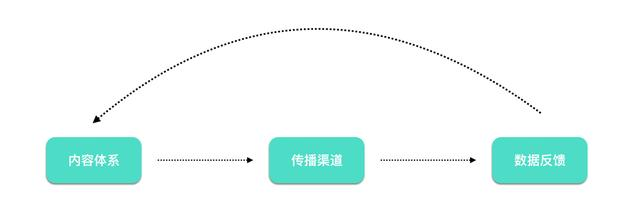
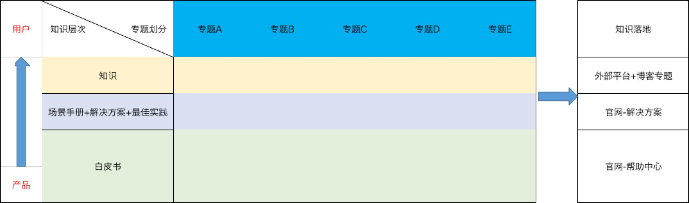

分析ToB和ToC区别的文章很多，有的说商业模式不同、有的说客户群体不同，这些答案都没错。但是给我感触最深刻的一点，就是无聊，准确的说是严肃且无聊，这也是SaaS市场运营新同学入职没多久就离职的主要原因。不过我想说，有趣好玩的真的有很多人做了，无聊一点，竞争也少一点，不是吗？就着无聊这个话题，说说SaaS的内容营销。
两个原则：深度+连贯
无聊和严肃是为什么呢？
那就是深度，人天生对通俗易懂的东西更感兴趣，就好像听交响乐的永远比流行音乐的人少一样。然而SaaS的商业模式，是基于工作这个场景的。
网上不是有这么句话吗——别在工作的时候跟我谈理想，我的理想是不工作。
工作这个场景，要求细致认真，要求深度，要求专业，这一些都是反人类的。但是，内容营销，还是要去贴合工作场景。所以，SaaS行业的内容营销，要遵循两个原则——深度+连贯。
什么是深度？
有人常常把它和晦涩难懂、又臭又长划等号。错，难懂与否，完全取决于笔者的水平。所以，真正的深度，是有可借鉴性的，要不一看就是小编到处摘抄整理的，蒙不了内行。
什么是连贯？
这个好理解的，为什么学习的时候推荐大家读书，因为书里的内容就是连贯的，连贯的内容是学习的好素材。
我面试的时候常问面试者，你怎么学习xxx的，凡是告诉我看公众号，看知乎的，多半水平不咋地。看十万字公众号推送，不如看一万字书。同样，公众号的内容要做深度，必须连贯，这也能增加用户的粘性。
原则性的东西为什么放在最前面说呢？
其实刚开始做的时候这是不明显的，内容没深度，不连贯，蹭蹭热点，传递一下焦虑反而涨粉更快，但是这会在未来制约你。
我最近留意到一个SaaS行业的公众号，恰好我也认识负责这个公众号的运营。他的内容，以一个新媒体运营的水平来看真的不错了。有行业解读的热点、有演讲的实录、有基于垂直领域分析。而且内容的完成质量也很不错，但是阅读量其实徘徊在了一个不上不下的水平。
因为这些内容，一是缺少深度，让从业者认同的那种深度；二是缺乏连贯性，想起什么推什么。我说这个运营者以新媒体运营的角度来说很不错了，但是以内容营销的角度还不够。要做内容，得让自己成为专家才够。
这也是SaaS内容营销人值钱的原因，想跟假装香菇的精神病沟通，那就学着做一个香菇，这一直是我做运营的理念。
两个出发点：产品+场景
做SaaS说白了就是卖软件的，有的内容营销人，反倒是总害怕让别人觉得自己是卖软件的。其实卖软件也没什么可耻的，只不过一些人会觉得你在做内容的时候让别人知道你想卖软件，会有戒心。这有道理，但是也不全对。卖软件没必要遮遮掩掩，怕的是你不专业。要做内容营销，有两个出发点：一个是产品，一个是场景。
关于产品，你得能逆向得出产品的设计思路。在之前的一篇文章《项目管理工具缘起何处》这其实是我为了回答知乎上一个关于Trello和Worktile区别的内容，获赞还挺多的，有兴趣可以去搜搜。
我要卖Worktile，但是我不会贬低别的产品，我也不会背销售话术——把三大优点四大功能说个一字不差。我是从产品的本源——看板开始说起，介绍项目管理工具的起源，最终说到产品的取向不同。这样的内容，不会招人烦，反而效果会不错。
因为什么呢？
因为我把产品和场景都钻透了，说到底，我说的对，甚至你看了还会有点收获。
反面来看，如果脱离了这两个出发点，光说产品就是硬广告；不说产品那你就做不成营销了。
但是如何把产品和场景钻透呢？
除了做一个香菇，还得具备一定的产品经理思维。多跟在产品经理屁股后头蹭蹭知识，对做内容很有帮助的。
两条腿走路：输入+输出
说是两条腿走路，实际上输出这一点大家都没什么疑惑。主要是输入，找到办法去发掘内容，才能避免“身体被掏空”。
1. 做好跨部门协作
（1）与市场团队
市场活动就是一座内容的富矿，市场活动可以分成很多类型，但是参与市场活动的无非两类——潜在用户和成交用户。
首先，针对这些用户，我们可以观察他们在活动中的提问，他们的兴趣点、关注点等。为外部内容的创作，提供感性的方向参考。如：目前公司的OKR活动中，很多用户会向导师咨询是否有各个部门的OKR模板，方便他们回去作为OKR制定过程中的参考。为此，我们也就有针对性地推出了一系列模板，果然反响很不错。
其次，在活动的过程中可能会有一些互动、讨论以及游戏的环节。这些环节中，用户的表现就可以作为案例，服务于内容。当然，企业的市场活动多种多样，这时候只要认真观察，总能找到内容获取的切入点。例如：在2018年进行的企业OKR咨询服务，运营便计划全程参与，获取企业在OKR培训过程中的宝贵实践经验，加以加工利用。
（2）与客户成功团队的合作
运营不能离开用户，所以我们从没有停止过对用户的拜访。但是毕竟精力有限，一个运营再努力，也不可能比客户成功团队更熟悉用户。所以，客户成功团队能够为运营提供很多，如：最佳实践、客户案例等。
其中的合作模式，可以根据各自水平而定。例如：我们以往的经验是运营为客户成功提供访谈的模板，客户成功部门填写，最终由运营完成内容的定稿。
（3）与产品团队的合作
产品的设计开发过程中，会留下大量的文档，如：需求文档、用户调研等。其实产品运营的一些工作，正是这些工作的反向操作，如：产品部门根据用户的需求，设计了相关功能。
而产品介绍中，又要反过来介绍该功能是如何应用于用户某场景的。这由需求到功能，再由功能到场景的翻译过程，极容易出现误差。多与产品团队沟通功能，既能加深对产品的理解，也能利用一些已有的内容，可谓一举两得。
2. 与社群／活动相结合
我在之前的文章中提过很多次，我不喜欢去割裂运营中的各个岗位。做内容营销，一定要有自己的社群和活动。有了内容，就会有读者，有了读者就有社群，有了社群就要互动，有互动就有了活动。
当然，开始的点可以变化，比如：先有活动，再有社群，最后有内容。总是，这三者中的一件事有了，另外两个就会相继出现。这与和市场部门的合作类似，只不过是自己做，一切以内容为导向而已。社群内的讨论会带给你新的观点和视角，而且往往是作为资深人士才能想到的问题。
做好三件事：搭一个内容体系+找到最优的传播渠道+多维度的数据反馈优化
内容营销的本质是很简单的，无非是让别人通过各种途径，接触到你的内容，最终转变为你的用户。所以，内容营销的做法也是很简单的。
1. 内容体系
内容体系不好一概而论，因为每个产品的目标用户、受众群体都是不同的。所以如何搭建内容体系，是需要不断摸索和优化的。我个人的经验是依据从产品到用户这个纵轴，来规划内容。
这张图里，没有反映的是内容的目的和受众。每项内容，给谁看，解决什么问题，用户浏览转化的路径要想清楚。
2. 传播渠道
其实说起传播渠道，我们能想到很多，比如：产品内部／官网博客／社区／自媒体平台等。把合适的内容，以合适的形式，放到合适的位置，就是传播渠道搭建过程中需要操作的。
3. 数据反馈
内容做好，放到渠道上之后，需要做的就是守株待兔了。互联网开发强调小步迭代，内容营销也一样，我们要根据市场的反馈不断调整内容。在此之前，得找到可以衡量内容营销的指标。
数据指标一般费分为两大类：过程指标和结果指标。
结果指标其实比较简单，如果以线索获取为目的，我们就统计线索；如果以品牌宣传为目的，我们就评价展示量。比较难以去监控的是过程指标，例如：微信推送，我们不仅要关注结果（线索），同时要关注粉丝量的增长，每一篇得阅读量，转发量等。因为结果只能告诉你好坏，而过程指标可以告诉你哪里做得不好，哪里学要改进。
关于数据反馈的内容，如果展开来讲可以单独再写一篇，以后有机会我会介绍。
最后说两句，其实做运营，所有的方法都不难，难的是把事情做好的能力。一件事要做好，前期要想的足够充分，做的过程中要认真，结果要仔细分析。就好像我放的那张图一样，实际上是一个非常简单的闭环。只需要做好两件事——保持耐心，不断优化。
#专栏作家#
袁林，人人都是产品经理专栏作家。分享SaaS运营和企业管理／协作／办公的相关知识
本文原创发布于人人都是产品经理。未经许可，禁止转载。
题图来自网络


-
重头A 6天前 回复 1 -
朵儿影视123 3天前 回复 0 -
萌豆云建站 6天前 回复 2 
徐今天at校宝 6天前 回复 4 -
朵儿影视汁源共享 3天前 回复 0
查看更多评论Saas运营
你说名字，我都有噢
深刻
转发了
你说名字，我都有噢